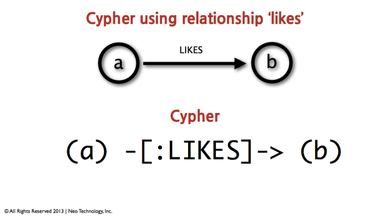

Intro to Cypher
This guide explains the basic concepts of Cypher, Neo4j’s query language. You should be able to read Cypher queries after finishing this guide.
This is a guide for Beginner. You should have familiarized yourself with Graph Databases and the Property Graph Model.
Overview
About Cypher
Cypher is a declarative, SQL inspired language for describing patterns in graphs. It allows us to describe what we want to select, insert, update or delete from a graph database without requiring us to describe exactly how to do it.

Nodes
Cypher uses ASCII-Art to represent patterns. We surround nodes with parentheses which look like circles, e.g. (node). If we later want to refer to the node, we’ll give it an identifier like (p) for person or (t) for thing. In real world queries, we’ll probably use longer, more expressive variable names like (person) or (thing).
So for example, if we want to find all the persons and the things they like, the query will include the identifiers person and thing, e.g. in a pattern like (person)-→(thing) so we can refer to them later, e.g. to access properties like person.name and thing.quality.
The more general structure is:
MATCH (node) RETURN node.property
MATCH (node1)-->(node2)
RETURN node2.propertyA, node2.propertyBRelationships
The problem with the Cypher snippets we saw above is that they didn’t say anything about the relationship between the nodes, so even though we used the identifier person, we may well have gotten back suppliers and sellers of our things. So we need to be able to describe the types of relationships in our Cypher queries.
If we wanted to retrieve everyone who likes a thing, we would describe the pattern (person)-[:LIKE]→(thing) to retrieve only nodes that had a relationship typed LIKE with other nodes (thing). Those nodes would the be persons as implied by the LIKE relationship.
Or generally:
MATCH (node1)-[:REL_TYPE]->(node2)Sometimes we need access to information about a relationship (e.g. its type or properties). For example, we might want to output the rating that an person gave in a thing and that rating would probably be a property of the like relationship. As with nodes, we can use identifiers for relationships (in front of the :TYPE). If we tried to match (person)-[like:LIKE]→(thing), we would be able to output the like.rating for each of the persons and all the things that they like.
MATCH (node1)-[rel:TYPE]->(node2)
RETURN rel.propertyLabels
Labels allow us to group our nodes. For example, we might want to distinguish things from persons or companies (both deal with things). By matching for (person:Person)-[:LIKE]→(thing), it will return John, but not ACME Inc - a well known manufacturer.
Labels are usually used like this:
MATCH (node:Label) RETURN node
MATCH (node1:Label1)-[:REL_TYPE]->(node2:Label2)
RETURN node1, node2Practical Example
Let’s try it out what we’ve learned.
Create a record for yourself
CREATE (you:Person {name:"You"})-[like:LIKE]->(neo:Database:NoSql:Graph {name:"Neo4j" })
RETURN you,like,neoCreate your friends
MATCH (you:Person {name:"You"})
FOREACH (name in ["Johan","Rajesh","Anna","Julia","Andrew"] |
CREATE (you)-[:FRIEND]->(:Person {name:name}))Find your friends
MATCH (you {name:"You"})-[:FRIEND]->(yourFriends)
RETURN you, yourFriendsCreate second degree friends and expertise
MATCH (neo:Database {name:"Neo4j"})
FOREACH (pair in [{friend:"Anna",expert:"Amanda"},{friend:"Johan",expert:"Max"}] |
MERGE (friend:Person {name:pair.friend})
CREATE (friend)-[:FRIEND]->(:Person:Expert {name:pair.expert})-[:WORKED_WITH]->(neo))Find someone who can help you learn Neo4j
MATCH (you {name:"You"}), (expert)-[:WORKED_WITH]->(db:Database {name:"Neo4j" }),
p = shortestPath( (you)-[:FRIEND*..5]-(expert) )
RETURN p,db